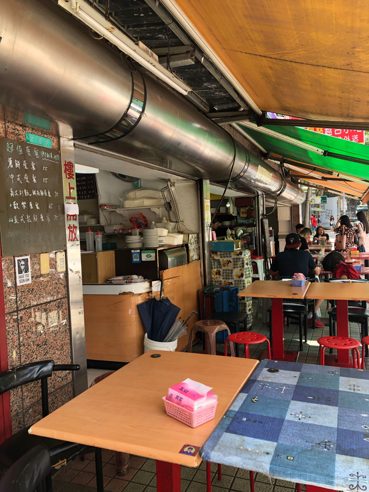

麥多樂
轉角那間無招牌早餐店

麥多樂是兩位編編每周一上完體育課，經常光顧的店家。不僅能當早餐，下午時光買來當作點心也是非常適合的。
一起來看看我們今天挖掘了哪些關於麥多樂的秘密吧！
想怎麼點，就怎麼點！
只要是店裡有的食材，老闆娘都能做給你。
香雞排蛋堡+巧克力厚片+起司蛋餅+奶茶
$35+$25+$25+$15=$100
最近太常被說過瘦，點這個就對了！
無糖豆漿+鮪魚蛋三明治+原味蛋餅
$20+$30+$20=$70
低脂的鮪魚蛋三明治，再加上不添加多餘油脂的原味蛋餅，讓你吃得飽又不怕胖。
總匯三明治+義大利肉醬麵+紅茶
$35+$45+$20=$100
麥多樂的總匯三明治堪稱份量王，男生怕吃不夠的話，再加上一份義大利麵一定能夠飽！
這間位於轉角的無名早餐店，已經默默地陪伴世新學生三十多個年頭，但許多人不知道的是，其實它是有店名的—「麥多樂」。
歷史悠久，老闆也換過一輪，有些故事就像蛋餅皮一般，一層一層地被堆疊起來，造就了這家看似平凡，實則充滿溫度的早餐店。
M編
鮪魚蛋堡：剛烤好的漢堡麵包夾上熱騰騰的蛋、增添風味而不油膩的小黃瓜美乃滋，以及蛋白質豐富的鮪魚，經過我的深思熟慮，我給4分！
J編
巧克力吐司：每次來到這家店必點的食物，脆脆且無邊的吐司抹上巧克力醬，總是能讓我想起小時候放長假回鄉下遊樂的日子。其他鹹食也同樣純樸接地氣，若是怕太鹹可以跟阿姨們說不用加醬喔！給它4.5顆星:）